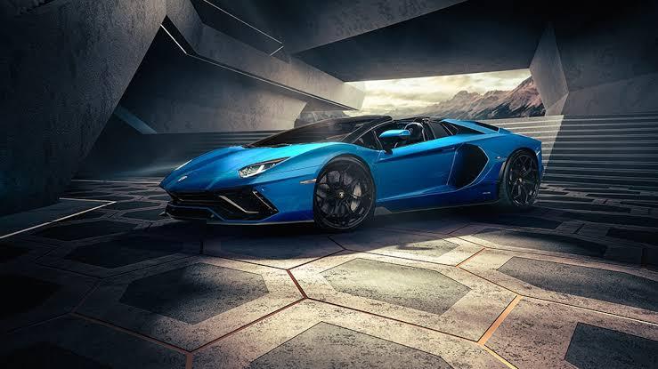

Lamborghini
2022 Lamborghini Aventador: Everything You Need to Know
What’s New in the 2022 Lamborghini Aventador

Sporty performance features find a perfect marriage with the peppy colors of the exterior body in this technology-embedded next-generation car. Lamborghini brings multiple aspects under its umbrella to establish better functionality through its latest edition of the Aventador. Chic details stand out in this vehicle of slick visual proportions. Touted as the signature craft piece of Lamborghini, Aventador comes in sleek varieties this year to keep launching shots of exhilaration among the audience. Better insights into the features and prices of the popular models are available with great deals at Lamborghini Palm Beach, Florida. For those who want smoother drives and a deeper dive into this new model, check out what’s new in the 2022 Lamborghini Aventador.
 Supercars radiate racing feats, enkindling a spirit of an undying urge to be behind the wheel that takes you on smoother courses. The Lamborghini Aventador can hold two people and offers its spectacular performance as a convertible and a coupe. Power delivery to all four wheels is guaranteed through the seven-speed dual-clutch automatic transmission. A 6.5-liter V12 engine-equipped vehicle is what you get with revving insides for a memorable ride on the LP 780-4 Ultimae. It is the only specification available on this model.
Supercars radiate racing feats, enkindling a spirit of an undying urge to be behind the wheel that takes you on smoother courses. The Lamborghini Aventador can hold two people and offers its spectacular performance as a convertible and a coupe. Power delivery to all four wheels is guaranteed through the seven-speed dual-clutch automatic transmission. A 6.5-liter V12 engine-equipped vehicle is what you get with revving insides for a memorable ride on the LP 780-4 Ultimae. It is the only specification available on this model.